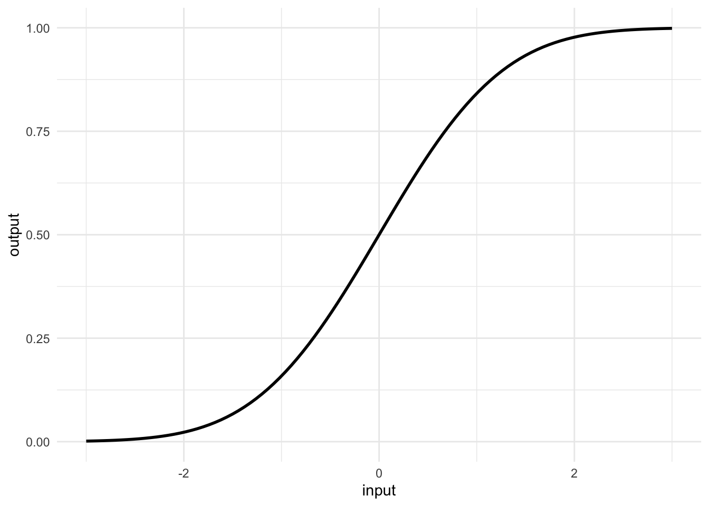
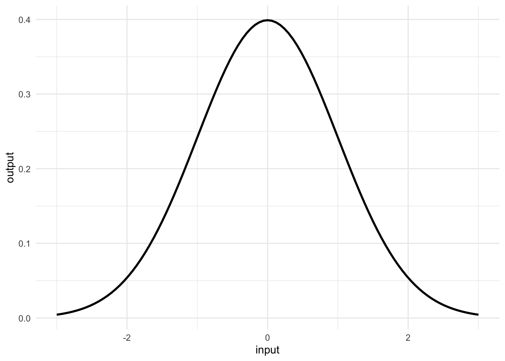
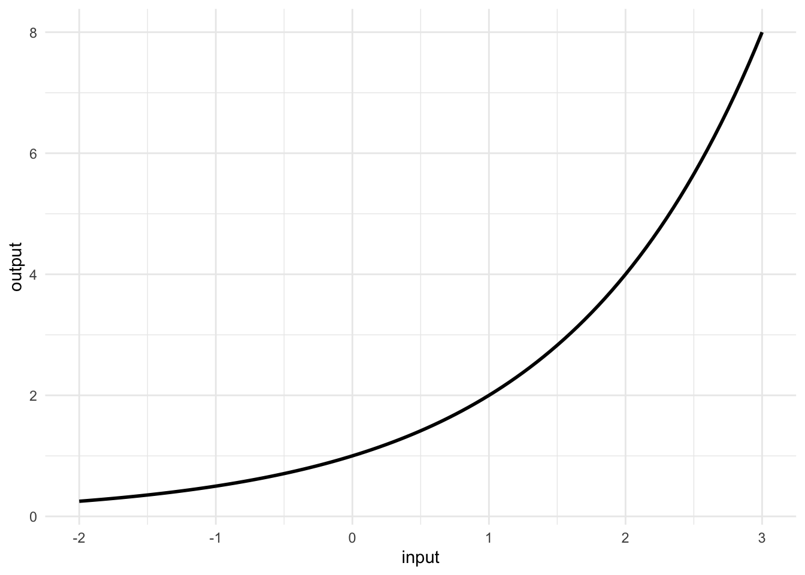
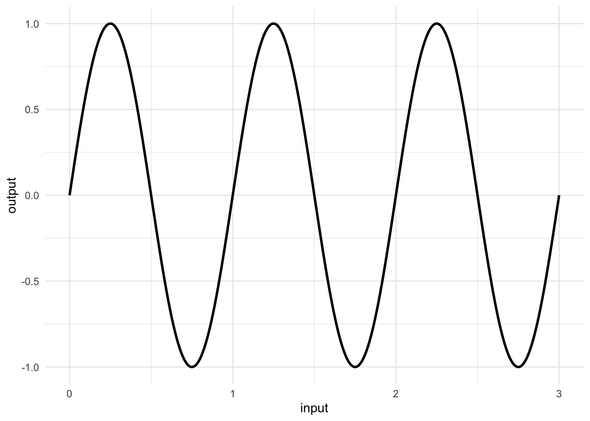
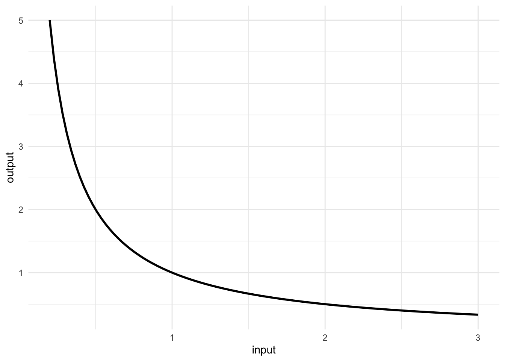

Drill Questions: Storybook Functions
WarningRemember to hand in your work …
At any point, you can submit your answers by collecting them and uploading them to the class site.
No answers yet collected
If requested by your instructor, please identify here the people from whom you received assistance on this assignment.
If the answers that have been loaded automatically are not yours, press this button before starting your work:
NoteIdentifying Storybook Functions
Which of the following is not the name of a storybook function?
d06-not-storybook
Match each storybook function to its characteristic behavior. The function osc() …
d06-osc-behavior
The function hillside() …
d06-hillside-behavior
The function hill() …
d06-hill-behavior
The function double() …
d06-double-behavior
The function doublings() is closely related to double(). What is the relationship?
d06-doublings-relationship
Which storybook function would best describe the outdoor temperature over the course of a single day (rising in the morning, falling in the evening, repeating daily)?
d06-temp-daily
Which storybook function would best describe the adoption of a new technology (few users at first, rapid growth, then leveling off as the market saturates)?
d06-adoption
NoteFunction Properties
Which storybook functions have a positive rate of change for all positive inputs?
recip() d06-pos-recip double() d06-pos-double hill() d06-pos-hill hillside() d06-pos-hillside steady() d06-pos-steadyFor the osc() function, what is the period (the input interval over which the function completes one full cycle and returns to its starting pattern)?
d06-osc-period
At what input value does hillside() produce an output of 0.5 (halfway between its minimum and maximum)?
d06-hillside-half
For the double() function:
- What is the output when the input is 0?
- What is the output when the input is 3?
- What is the output when the input is -1?
For the doublings() function:
- What is the output when the input is 8?
- What is the output when the input is 1?
- What input to
doublings()gives an output of -2?
The flat() function always returns the same output regardless of input. What is the rate of change of flat() with respect to its input?
d06-flat-rate
NoteInput and Output Transformations
The storybook functions take pure numbers (dimensionless) as input and produce pure numbers as output. To use them with real-world quantities that have units, we use input transformations.
An input transformation has the form \(a(q - q_0)\) where \(q\) is the real-world input quantity. What must be true about the dimension of \(q_0\)?
d06-input-trans-dim
In the input transformation \(a(q - q_0)\), what must be true about the dimension of parameter \(a\)?
d06-a-dim
Suppose you want to model oil production using hillside(), and the data shows production reached half its maximum value around the year 1970. In the input transformation \(a(\text{year} - q_0)\), what value should \(q_0\) have?
d06-q0-oil
An output transformation has the form \(A \cdot f(\text{input}) + B\) where \(f()\) is a storybook function. If you want the transformed function to have a maximum output of 100 and a minimum of 0, and the storybook function naturally ranges from 0 to 1, what should \(A\) be?
d06-output-A
Continuing from the previous question, what should \(B\) be?
d06-output-B
If a quantity is measured in miles per gallon and you need to create a dimensionless input for a storybook function using the transformation \(a(q - q_0)\), what are the units of parameter \(a\)?
d06-mpg-units
NoteRecognizing Functions from Graphs

Which storybook function does this graph show?
d06-graph-hillside

Which storybook function does this graph show?
d06-graph-hill

Which storybook function does this graph show?
d06-graph-double

Which storybook function does this graph show?
d06-graph-osc

Which storybook function does this graph show?
d06-graph-recip